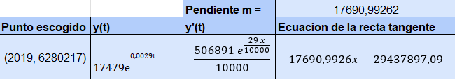

INTRODUCCIÓN
Para el primer corte trabajamos con la ecuación diferencial poblacional que afirma que el cambio de la población es proporcional a esta, a la constante la denominamos constante crecimiento. a través de esta ecuación modelamos el comportamiento de la función que calcula la población en términos del tiempo para dar soluciones explícitas hay que considerar los valores iniciales que serán escogidos de las 20 muestras que se tomaron.
Ecuación Diferencial Poblacional
trabajamos con la ecuación diferencial poblacional

Se resuelve esta ecuacion y queda:

Y con esta ecuacion es que trabajamos

20 datos recolectados
Esos datos se toman de una base oficial de sus censos históricos, lo cual estos datos son muestras repartidas uniformemente. dicho esto usamos Excel para ubicar los datos seleccionados

Grafica
Con estos datos logramos graficar donde el año es X y la población es Y. Con ayuda del programa Excel se logra obtener la ecuación con la línea de tendencia exponencial

20 datos y tangente
Escogemos un punto que sería el año 2019 con su respectiva población para hallar la pendiente de la recta tangente qué pasa por este punto usando la derivada de la función anterior
TANGENTE
Para hallar los datos de la tangente se realizo lo siguiente
En la ecuacion de la recta tangente se remplazo x por el año
SOLUCIÓN PAREJAS
En este paso solucionamos la ecuación diferencial poblacional y con esto encontramos "C" y "r" . "r". Esto con ayuda de Matlab.

¿COMO?
Con la primera pareja
0 | 2003 | 6.026849
16 | 2003 | 6.280.217
Primero se hallo C

y despues r

Solucion Pareja 2

Solucion Pareja 3

Solucion Pareja 4

Solucion Pareja 5

ERROR

CONCLUSIONES
• La población de El Salvador ha experimentado un crecimiento poblacional que sigue la ecuación exponencial y=1749e^0.0029t , donde t representa el tiempo en años.
• El único año en el que la población de El Salvador disminuyó fue en 2006, en comparación con los demás años.
• La estimación de la población real en 2023 basada en los datos de los años 2006 y 2013 es la más precisa, con un margen de error del 1.35%. Con la función solución 6091188* e^(0.001997372*t)
• La ecuación de la recta tangente, 17690,9926−29437897,09, describe una línea que se aproxima al comportamiento de la población a lo largo del tiempo.